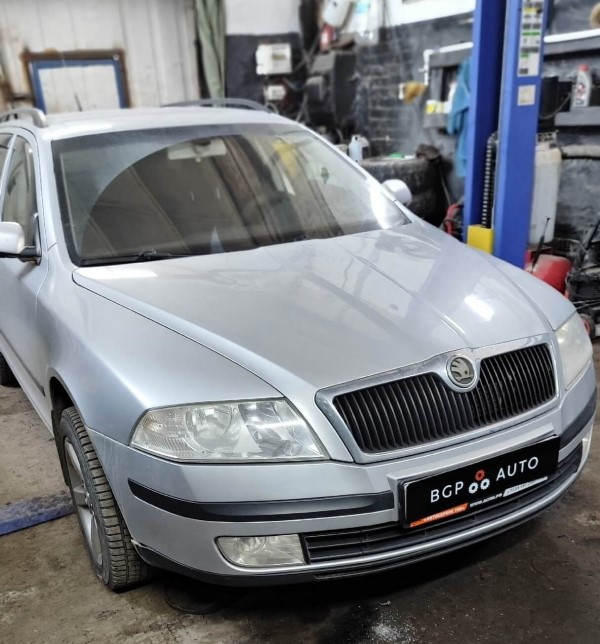
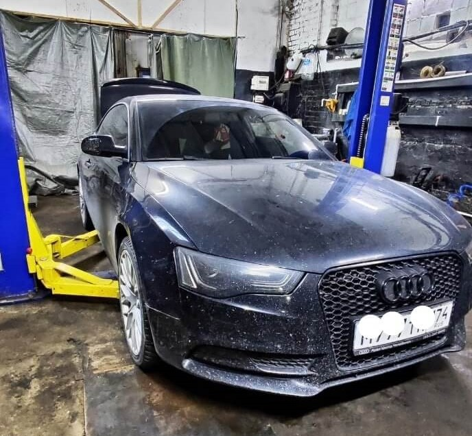
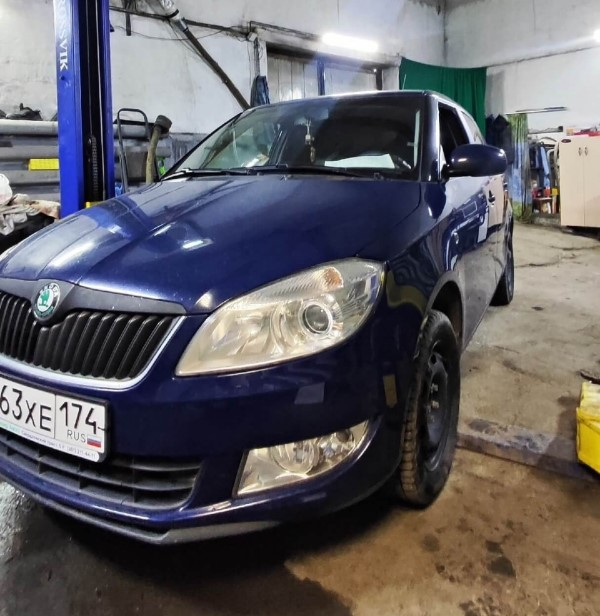

Добро пожаловать!
Качественный автосервис по доступной цене - BGP AUTO!
Ремонт и обслуживание автомобилей
Volkswagen, Audi, ŠKODA, SEAT, Porsche
Использование официальной технической документации и специнструмента
Опыт работы более 6 лет
За что нас ценят
- Мы за честность и открытость - любой клиент может увидеть как мы работаем и присутствовать при ремонте.
- Мы несем личную ответственность за качество выполняемого ремонта и это отличная мотивация делать все качественно.
- За вами выбор - установить ваши запчасти или положиться на нас за покупку запчастей и материалов.
- Предложим варианты запчастей от бюджетных до оригинальных по вашему предпочтению.
- Имеем опыт работы в дилерских сервисных центрах VAG группы.
Отзывы о нас
УСЛУГИ и ЦЕНЫ
АКЦИИ
-

Комплексная проверка авто перед покупкой
- Проверка кузова толщиномером - для выявления поврежденных элементов.
- Проверка двигателя эндоскопом (износ и нагар в цилиндрах).
- Замер компрессии в двигателе.
- Замер давления масла и давления топлива.
- Компьютерная диагностика.
- Диагностика ходовой части.
-
Бесплатный осмотр днища и ходовой части
При комплексном периодическом обслуживании с заменой масла и фильтров - осмотр днища и ходовой части бесплатно.
В осмотр днища входит визуальный осмотр на наличие серьезных повреждений, сильной коррозии, нарушение целостности сварных швов.
В осмотр ходовой части входит визуальный осмотр целостности пыльников, наличие люфтов в подвеске, подтёков стоек, тормозной системы и системы питания.
-
Сезонная подготовка автомобиля
Зимняя:
Проверка работы отопителя, проверка аккумулятора (емкость, уровень электролита, плотность), ремни приводов.
Летняя:
Проверка ходовой, промывка радиаторов, проверка состояния фильтров.
НАШИ РАБОТЫ
-
Volkswagen Polo 1.6
Клиент жаловался на то что не срабатывал вентилятор охлаждения двигателя и не было зарядки от генератора.
После диагностики выявили участок электропроводки который имел обрыв.
Выполнили ремонт и убедились в работоспособности всех узлов, клиент доволен!
-

Volkswagen Polo
Частая проблема - люфт в рулевой рейке справа.
Установили ремкомплект втулок для рулевых реек.
Заменили задние амортизаторы.
-

Toyota Avensis 1.8
Выполнили плановое техническое обслуживание!
Перед заменой масла выполнили раскоксовку двигателя, так как клиент жаловался на расход масла.
Заменили масло, фильтра, осмотрели ходовую часть, есть недочеты, будем устранять.
-

Skoda Fabia 1.2
Заменили комплект цепи ГРМ.
Напоминаем, не стоит игнорировать посторонние звуки при запуске двигателя, так как чаще всего это признак растянутой цепи.
Эксплуатация автомобиля с такой неисправностью может привести к дорогостоящему ремонту.
- 
Skoda Octavia
Диагностика ходовой части с последующей заменой рулевого наконечника.
-

Skoda Octavia
Замена насоса охлаждающей жидкости и его ремня.
-

Audi A4
Замена опор двигателя и передних наружных ШРУСов.
-

Mazda CX-7
Клиента беспокоил повышенный расход масла и сизый дым из выхлопной трубы.
Проверили состояние турбокомпрессора и заглянули в цилиндры эндоскопом.
Множественные задиры на цилиндрах говорят о том что требуется капитальный ремонт двигателя.
- 
Audi A5
Клиента беспокоил стук в задней части автомобиля в холодную погоду.
Задефектовали задние амортизаторы.
Подобрали, заказали и установили новые.
-

Volkswagen Touareg
Замена пыльников передних наружных ШРУСов, пыльника шаровой нижнего рычага и передних тормозных колодок.
- 
Skoda Fabia
Замена масла ДВС и фильтров.
Помыли систему охлаждения и отопитель салона, поменяли передние амортизаторы с опорами и передний сальник коленвала.
Запчасти подобрали по выгодным ценам.
-

Skoda Octavia
Осмотр ходовой и поиск утечки охлаждающей жидкости.
В ходе осмотра выявили люфт тяг переднего стабилизатора и негерметичность насоса охлаждающей жидкости.
Произвели замену тяг, заказали насос охлаждающей жидкости.
ЗАПЧАСТИ
- Длительность ремонта напрямую зависит от наличия запчастей, поэтому у нас большой ассортимент запчастей в наличии.
- Качество ремонта напрямую зависит от качества запчастей, поэтому мы работаем только с проверенными производителями и поставщиками.
- Широкий выбор по ценовым категориям, от бюджетных до оригинальных.
- Бесплатно подберем необходимые запчасти, если последующая установка проводится в нашем сервисе.
- При заказе полного комплекта расходников для ТО - работы по ТО со скидкой 50%.
КОНТАКТЫ
Свяжитесь с нами по интересующим Вас вопросам
Иван
моторист
Дмитрий
механик
Алексей
диагност
График работы
ПН - ПТ9:00 - 19:00
СБ - ВС9:00 - 18:00